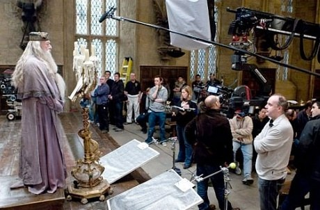
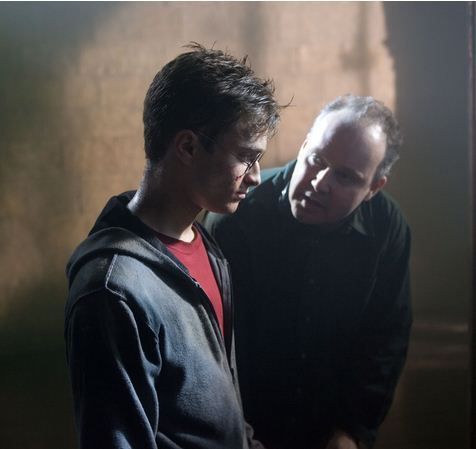

Vida personal
David Yates nació el 30 de noviembre de 1963 en Saint Helens, Inglaterra. A los doce años, tras ver Tiburón, de Steven Spielberg, se dio cuenta de que el cine era lo suyo. Antes de morir, su madre le regaló una cámara. La usó para crear películas caseras en las que aparecen su hermano, otros familiares suyos y sus amigos.Yates asistió a la Universidad de Saint Helens, donde completó los cursos de sociología, estudios de política y literatura, antes de pasar a la Universidad de Essex y la Universidad de Georgetown en Washington D.C. Está casado con Yvonne Walcott, y no tienen hijos.
Carrera cinematográfica
Estudió en la Escuela Nacional de Cine y Televisión en Beaconsfield, donde dirigió y realizó cortometrajes y proyectos televisivos, hasta que debutó como director de largometrajes con el drama The Tichborne Claimant (1998), basado en una historia real ambientada en el siglo XIX sobre el señor Tichborme, el noble más rico de Inglaterra, interpretado por Robert Pugh. Yates fue nominado como Mejor Director en el Festival Internacional de Emden.Su carrera continuó al frente de la dirección de series televisivas como The Way We Live Now o State of Play, hasta que en 2004 tuvo un merecido reconocimiento profesional gracias a su labor en la mini serie Sex Traffic, un éxito en varios festivales; de hecho, logró 8 premios de los 9 a los que estaba nominada en los BAFTA, entre ellos el de Mejor Serie Dramática.
Salto al mundo mágico de J.K.Rowling
Pero lo que realmente llevó al director británico a la fama mundial fue dirigir las cuatro últimas películas de la exitosa saga Harry Potter.Yates fue el responsable de que la quinta película de Harry Potter (La Orden del Fénix), fuese un rotundo éxito de taquilla en 2007, al igual que El Misterio del Príncipe (2009), y las dos partes de Las Reliquias de la Muerte (2010,2011). También ha dirigido en 2016 y 2018 las dos primeras películas de Animales Fantásticos, ambientadas en el mismo universo que Harry Potter pero en los años 20 del siglo pasado.
